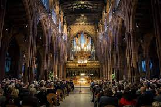
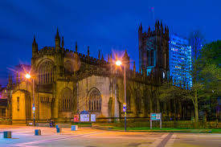

England is home to Manchester Cathedral, sometimes called the Cathedral Church of St. Mary, which is a magnificent example of Gothic architecture. Its history dates back to the early 15th century, and it has experienced several additions and changes over time. Bishop John Talbot laid the cornerstone for Manchester Cathedral in 1421, marking the start of the building project. The building was first constructed as a parish church and dedicated to St Mary. It wasn't until 1847 that the church received the title of cathedral. The original layout had a huge tower with pinnacles, a nave, chancel, and transepts, all influenced by the French Gothic architectural style. Like many other cathedrals in England, Manchester Cathedral went through a period of decline during the 16th-century Reformation. Many places of worship closed as a result of the monastic dissolution in the 1530s and 1540s, Manchester Cathedral included. After being restored as a parish church in 1548, the church experienced a number of renovations, such as the building of a new pulpit and the removal of the rood screen.
Manchester Cathedral is well known for its exceptional choir music. The boy and female choristers that make up the cathedral's choir perform throughout the year at services and other important occasions. In addition to taking part in the choir's workshops and lessons, visitors can enjoy taking in the choir's performances. Art and Culture is The cathedral is host to a wide range of pieces that highlight the skills of regional and worldwide artists, such as paintings, sculptures, and textiles. Throughout the year, the cathedral also holds a number of concerts, art shows, and other cultural events. Spiritual Experience: Manchester Cathedral is a house of worship where guests can participate in services, offer prayers, or just take time to meditate in the serene settings.
Since Manchester Cathedral was built over a long period of time, its architecture is a fusion of various styles. The cathedral's nave and choir are two areas where Perpendicular Gothic architecture is most noticeable. Victorian design elements can be seen in the tower and spire, while the Lady Chapel displays exquisite late mediaeval craftsmanship. The interior of the cathedral is adorned with elaborate woodwork, stained glass windows, and elaborate ornaments that showcase the artistry of several historical periods.
Manchester Cathedral's magnificent medieval quire stalls, which are beautifully carved and feature scenes from the Bible as well as everyday life, are among its most striking features. A plethora of historical items, such as antiquated manuscripts, textiles, and holy relics, are also kept in the cathedral. Visitors can also take in the stunning stained glass windows, which feature saints and biblical stories.
Manchester Cathedral, a representation of the city's heritage and faith, is very important culturally. It has been a house of worship for more than a thousand years and is still a bustling hub for religious rites, concerts, and neighborhood gatherings. The cathedral is a beloved landmark in Manchester and a well-liked tourist destination due to its magnificent architecture and rich historical background.